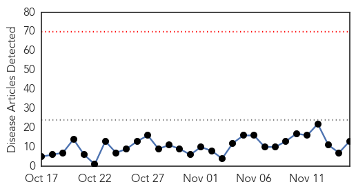
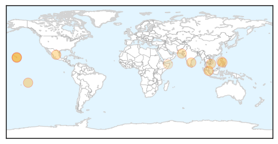
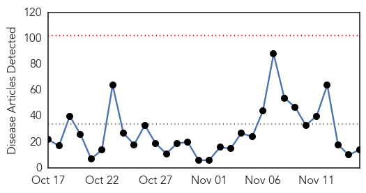
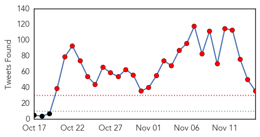

Dengue Fever
30-Day Web Trend
0 alerts, 0 warnings

30-Day Twitter Trend
5 alerts, 3 warnings

Article Locations
Article Confidences

Top Articles:
- 0.997
- Zika virus on Caribbean's radar
- 0.976
- Department of Health spraying areas with high mosquito presence
- 0.972
- NMSU gets $400,000 for dengue virus research
- 0.959
- Dengue Poses Economic and Epidemiological Threats to Southeast Asia–Hope on the Horizon
- 0.935
- Sanofi Pasteur CEO Olivier Charmeil
- 0.897
- Health staff shortage compounds dengue threat in Chennai
- 0.880
- Kaohsiung City dengue cases top 10,000
- 0.856
- Climate change could bring tropical disease epidemics to Britain, health expert warns
- 0.808
- Healthy workforce key to economic growth
- 0.729
- “You need to make a decision to be proactive”
- 0.589
- Bakunadong Pinoy: Highlighting the value of vaccination
- 0.585
- “You need to make a decision to be proactive”
- 0.527
- Millions Of Children's Lives At Stake As El Nino Strengthens
Top Tweets:
- 0.707
- Flavivirus news: Kaohsiung City dengue cases top 10000 - Outbreak News Today: Outbreak News Tod... https://t.co/z7s9ZJoLX7 pathogenposse
Ebola
30-Day Web Trend
0 alerts, 0 warnings

30-Day Twitter Trend
15 alerts, 12 warnings

Article Locations

Article Confidences

Top Articles:
- 1.000
- Guinea Releases The Last 68 People Quarantined After Ebola Exposure
- 1.000
- Ebola Today: Ebola Czar Named; NIH Plans for Pham to 'Walk Out of This Hospital'
- 0.999
- Ebola epidemic Left 11,000 people Dead Where As Infecting More Than 28,000 People,Recent Report
- 0.998
- WHO declares end of Ebola outbreak in Sierra Leone
- 0.993
- SEAGA congratulates President Koroma for ending the Ebola outbreak
- 0.980
- WHO Official Urges More Int’l Support To Liberia
- 0.967
- Brazilian Tests Negative for Ebola Virus a Second Time
- 0.964
- Ebola ‘will return’ to Sierra Leone says Dr. Marshall Elliot
- 0.959
- Rediscovering Africa ep.7: Sino-African cooperation to fight Ebola
- 0.950
- U.K. announces return of Operation Gitrock personnel
- 0.892
- Military support to the fight against Ebola comes to a close
- 0.736
- Michael Bloomberg Archives
- 0.685
- Airtel adopts 50 Ebola orphans
- 0.501
- Brussels and Royal Air Maroc Honored for Serving Liberia During Ebola Outbreak
Top Tweets:
- 0.996
- Ebola outbreak 2015 update: Guinea hopeful for Ebola end as it releases 68 people from quarantine - https://t.co/BBCeZBJkAm ebola
- 0.995
- ebola - https://t.co/1BXjNzDwC6 ebola
- 0.995
- GOTS ebola - https://t.co/rAytpZEURi ebola
- 0.995
- Ebola - https://t.co/brZ2j4Jbz3 ebola
- 0.995
- Ebola - https://t.co/YpS48xsdnF ebola
- 0.992
- Guinea Releases Last 68 People From Ebola Quarantine - Medical Daily https://t.co/2BbOfIh6rQ ebola EVD
- 0.992
- British Nurse Defeats Ebola - https://t.co/lBgvvy7om6 ebola
- 0.988
- Cameroon: Ebola Virus Clinical Trials Underway - https://t.co/yGRLLAEnxY ebola
- 0.987
- Guinea Releases Last 68 People Quarantined After Ebola Exposure - https://t.co/7Z7Ii94nGZ ebola
- 0.987
- Guinea Releases Last 68 People Quarantined After Ebola Exposure - https://t.co/2Qg6UMdw6l ebola
- 0.986
- Guinea Releases Last 68 People From Ebola Quarantine - https://t.co/WROoDn8TN9 ebola
- 0.984
- Yall remember Ebola ? arabvines sudanesevines dubsmash - https://t.co/15mvfnqY84 ebola
- 0.984
- Guinea Releases The Last 68 People Quarantined After Ebola Exposure - https://t.co/iaZd8dDPC9 ebola
- 0.983
- remaining people in ebola quarantine released - https://t.co/zJ4eurASdS ebola
- 0.983
- In Guinea: Last 68 people released from Ebola quarantine - https://t.co/cq26uaHHGY ebola
- 0.981
- KROMAH Amie Mother Celebrates End Of Ebola Virus Disease In Nigeria - https://t.co/WwkX8Xw68b ebola
- 0.980
- The Ebola ring vaccination trial - https://t.co/xVtyzf5q1b ebola
- 0.980
- RT: Confirmed Ebola virus disease cases by month. 1 reported by so far for November. Just 1. https://t.co/TqDxyGwfM6
- 0.976
- Airtel adopts 50 Ebola orphans - https://t.co/BH7KyXRpDJ ebola
- 0.973
- Sierra Leonean Woman Forsters 51 Ebola Orphans. - https://t.co/LVuOUfwWWn ebola
- 0.972
- Rolf Harris 'Treated In Ebola Ward' - https://t.co/a3B6yPFnNX ebola
- 0.972
- Rolf Harris 'Treated In Ebola Ward' - https://t.co/UcqVuC2VRI ebola
- 0.972
- Divine Ebola Works ~ Divine Shield Aggro - https://t.co/3227zQtnmZ ebola
- 0.970
- Over 68 people released from Ebola quarantine in Guinea - https://t.co/cjTL6bpaC7 ebola
- 0.968
- Xtreme hca garcinia cambogia drops garcinia afzelii kills ebola - https://t.co/mRrcM4KTCl ebola
- 0.966
- Profile of EboLa - https://t.co/LsICw6OZ55 ebola
- 0.959
- Brussels and Royal Air Maroc Honored for Serving Liberia During Ebola Outbreak - https://t.co/rdKKnUHz8V ebola
- 0.953
- Guinea Releases the Last Batch of People in Ebola Quarantine - https://t.co/Qn1WDsb0Z7 ebola
- 0.939
- Over sixty eight individuals launched from Ebola quarantine in Guinea - https://t.co/3n4Ou2mOqe ebola
- 0.932
- Initiatives Against Ebola in Program Countries - https://t.co/19JFLi0MgL ebola
- 0.911
- Guinea Releases Last 68 People From Ebola Quarantine - Medical Daily https://t.co/CAaJG43FhJ
- 0.862
- Brussels and Royal Air Maroc Honored for Serving Liberia During Ebola Outbreak - The Bush Chicken https://t.co/gk3gfz2TWJ ebola EVD
- 0.854
- Listening Post - Covering Ebola: Facts, fear and failures - https://t.co/oL2ZCqt0hO ebola
- 0.797
- The grim reality of Ebola crisis in the United States and all over the world - https://t.co/Hc0eeUvN0L ebola
- 0.796
- When will the true Ebola Heroes be recognised? - https://t.co/L9iJICeZ1c ebola
- 0.774
- comment - https://t.co/e52btcrieW ebola
- 0.721
- Biblioteca Digital Vérsila - https://t.co/OgYoUsXN92 ebola
- 0.640
- MOleg Guinea releases last 68 people from Ebola quarantine - CONAKRY (Reuters) - The final 68 people who had b... https://t.co/dfcLPcnAoI
- 0.626
- we need to be proud of our troops that have fought Ebola and those that are fighting Ebola
- 0.559
- Cocrystal Pharma Inc (OTCBB:COCP) Heats Up Fast - https://t.co/XbSj8YmuCf ebola
- 0.538
- Photos: tears of joy as ebola survivors are reunited with their families - https://t.co/U6r2XnczQH ebola
- 0.506
- Martin V. West On The Media's Ebola And Things The Washington Post Can Do To The Anti ... - https://t.co/d8Qst0CJV0 ebola